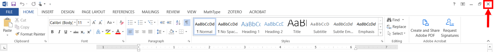
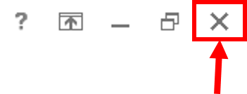
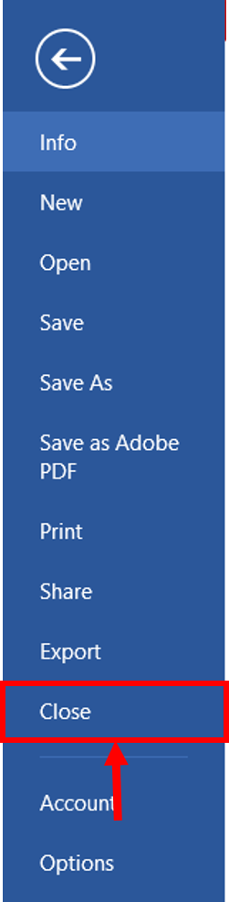

Cerrar una Aplicación
A continuación se presentan dos formas de cerrar una aplicación:
Los pasos para cerrar una aplicación con el botón de “cerrar ventana son:
- Ubique el botón para cerrar la ventana y haga clic sobre él.
El botón siempre está ubicado en el mismo lugar: en la esquina superior derecha. - Si el documento ha sufrido modificaciones, aparecerá un cuadro de diálogo preguntando si se quieren guardar los cambios. Seleccione la opción deseada:

- Si desea guardar los cambios, haga clic en Sí (Save).
- Si no desea guardar los últimos cambios, haga clic en No (Don't Save).
- Si no desea salir de la aplicación, haga clic en Cancelar (Cancel).
 
- Ubique el botón de Archivo (File) y haga clic sobre él.
Está siempre ubicado en la esquina superior izquierda de la pantalla. - Seleccione la opción Cerrar (Close).
- Si el documento ha sufrido modificaciones, aparecerá un cuadro de diálogo preguntando si se quieren guardar los cambios. Seleccione la opción deseada:
- Si desea guardar los cambios, haga clic en Sí (Save).
- Si no desea guardar los últimos cambios, haga clic en No (Don't Save).
- Si no desea salir de la aplicación, haga clic en Cancelar (Cancel).

